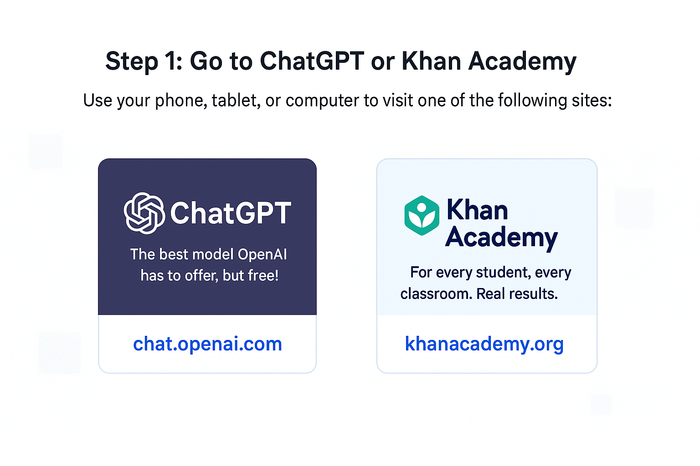
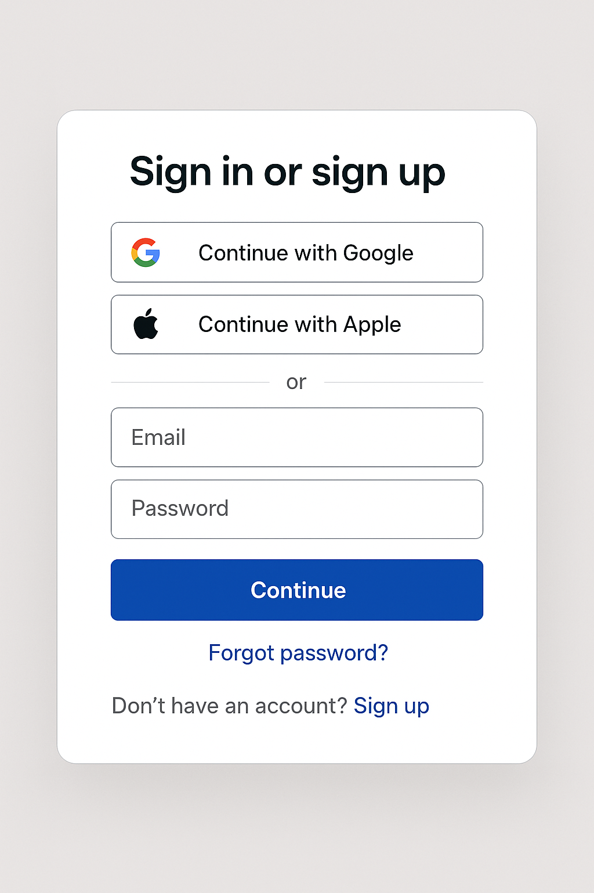
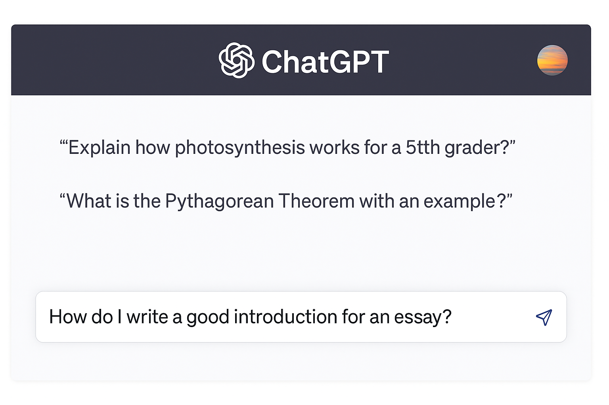
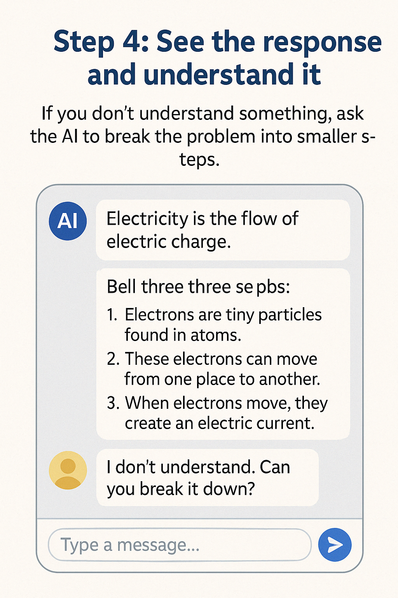
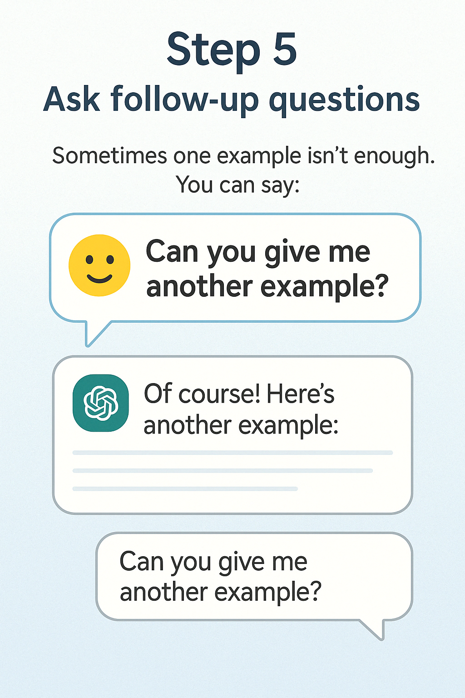
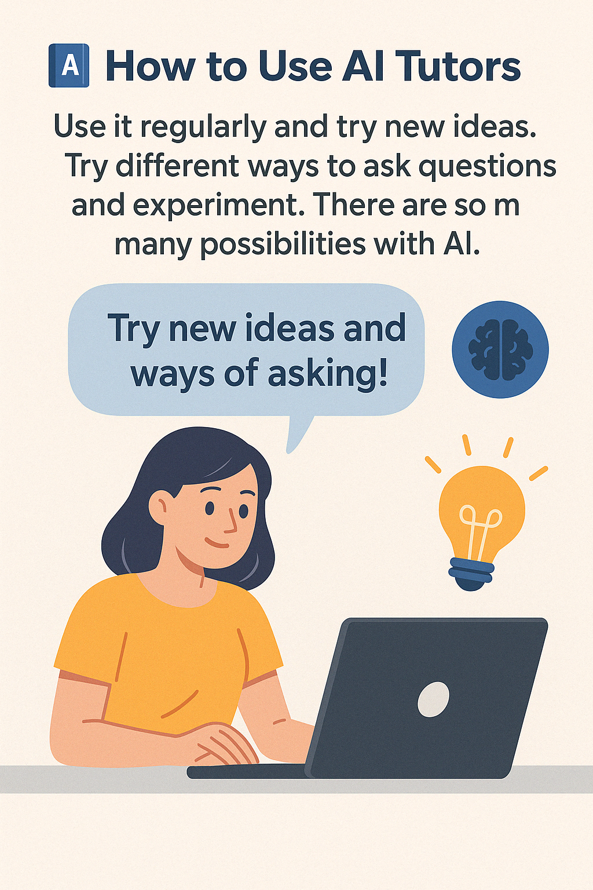

📘 How to Use AI Tutors
AI tutors are intelligent digital tools that help students understand difficult topics, get step-by-step help on problems, or practice material — just like a human tutor, but available 24/7.
📋 Step-by-Step Guide
Step 1: Go to ChatGPT or Khan Academy
Paso 1: Ve a ChatGPT o Khan Academy
Open ChatGPT or Khan Academy on your phone or computer.
Step 2: Sign up or log in
Paso 2: Regístrate o inicia sesión
Create a free account to save your questions and track progress. Use your email or Google login.
Step 3: Ask a question
Paso 3: Haz una pregunta
Try asking things like: “Explain fractions to a 4th grader” or “How do I solve this equation?” AI will reply instantly.
Step 4: Review and follow up
Paso 4: Revisa y haz seguimiento
If the explanation is too hard, ask for it in simpler words. You can also ask for examples or practice problems.
Step 5: Ask for more examples
Paso 5: Pide más ejemplos
Sometimes one example isn't enough. Ask: “Can you show me another one?” or “Make it more visual.”
Step 6: Practice often
Paso 6: Practica seguido
Use AI tutors as part of your daily routine. Just 10–15 minutes a day can make a big difference in learning.
🔗 Resources
ChatGPT (OpenAI)
chat.openai.com
Ask questions, get explanations, and practice with examples.
Khan Academy
khanacademy.org
Watch videos and do exercises in math, science, and reading.